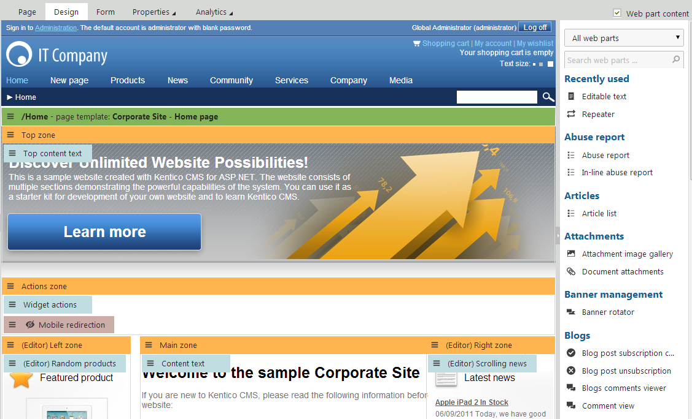
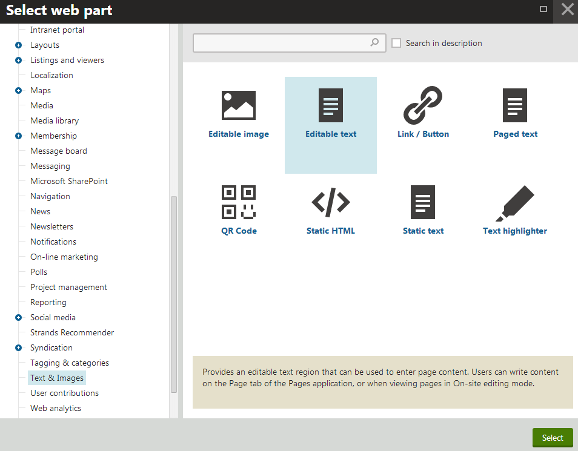
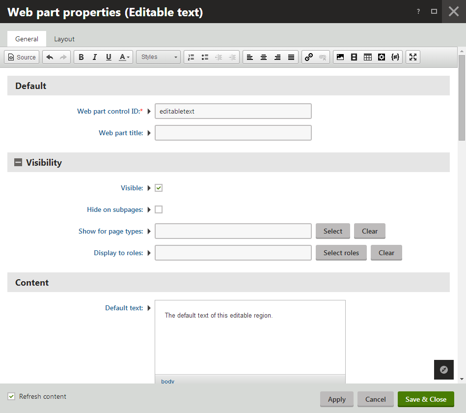
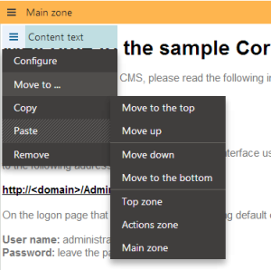
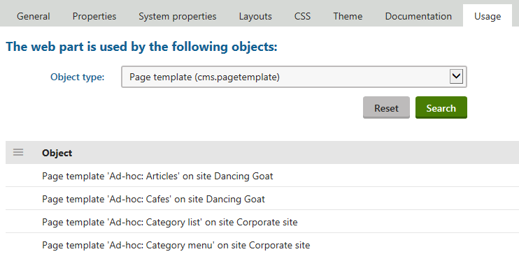
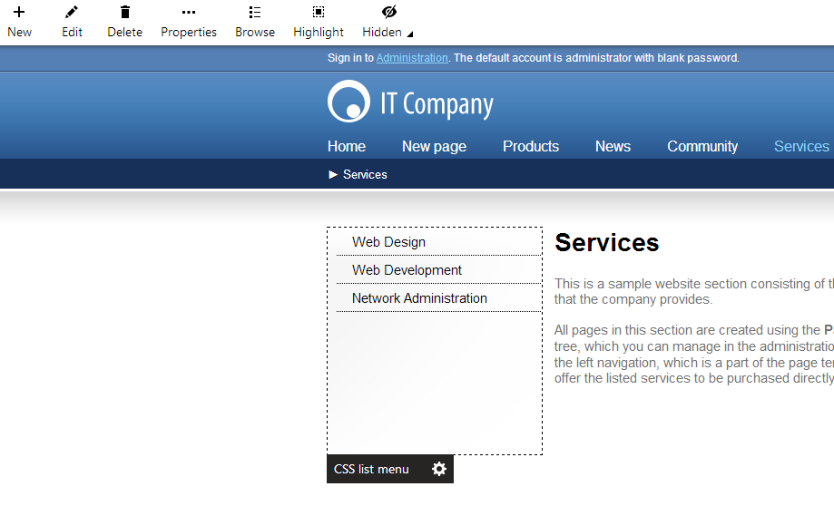

Using and configuring web parts
You can use web parts on both portal page templates and ASPX templates. However, with ASPX page templates, you lose the browser‑based interface — the web parts need to be added and configured in Visual Studio as standard user controls.
This page describes how to work with web parts when editing page templates through the portal engine.
Only users who have design permissions (Design web site for the Design module) can use web parts.
Open the Pages application and select your website.
Select any page in the content tree and switch to the Design tab (in Edit mode).
The Design tab allows you to view the structure of the page's template and manage the template's web parts.

Editing a page in Design mode (with the web part toolbar)
Impacts of modifying page templates
The system applies all web part modifications immediately and reflects the changes on the live site. Page templates are not connected to the page's workflow. However, you can use object versioning to keep track of the changes made to a template, including its web part content (and roll back to previous versions if necessary).
When you edit the web parts on a re-usable page template that is shared by several pages, the changes affect all of the pages. If you only wish to modify the design for one of the pages, you need to clone the template as an ad-hoc template or save it as a new page template.
Adding web parts
From the web part toolbar
The most direct way to add a new web part to the template is provided by the web part toolbar, which appears on the right side of the Design tab:
Find the required web part in the toolbar's list — you can use two approaches:
Type the name of the web part or its part into the search box. The toolbar searches for both individual web parts and entire categories.
Select a web part category at the top of the toolbar.
Drag the web part from the toolbar and drop it into the desired location in one of the template's web part zones.
Using zone actions
If you do not wish to use the toolbar, you can add new web parts into specific zones:
Right-click the header of the required zone, or click the zone's menu icon (
 ).
).Click Add new web part in the menu.
The Select web part dialog opens, which contains a catalog of all available web parts. Locate specific web parts by browsing through the category tree or using the search. Click Select to confirm your selection.

Selecting a web part from the web part catalog
Configuring web parts
When you add a new web part instance into a zone, using either the toolbar or the zone action buttons, the Web part properties dialog opens. Here you can set up the behavior of the web part by entering values into its properties.
Note
Web parts can skip the initial configuration dialog when users add new instances. To enable this behavior for a web part:
Open the Web parts application.
Select the web part in the tree catalog.
Check Skip initial configuration on the General tab.
Click Save.

Configuring the properties of a web part
To open the configuration dialog for existing web part instances, double-click the web part's header on the Design tab or open the web part's menu (
) and select Configure. You can also edit properties for entire Web part zones by double-clicking their header.
Macros in web part properties
All web part properties support macro expressions. Macros allow you to insert dynamic values instead of constants. The system evaluates macros at run-time, so the web parts can work based on context-dependent values.
For web part properties that do not have text values (such as checkboxes), insert macro expressions by clicking Edit value ( ) next to the given property. This opens a dialog where you can write the required macro.
See Adding macro values into web part properties for additional details.
Loading values from the properties of other web parts
Macro expressions allow you to connect the functionality or content of multiple web parts. By adding the following macros into properties, you can set up web parts that automatically adjust their behavior based on the configuration of other web parts or zones.
Note: The connected web parts or zones must be placed on the same page template.
{% WebPart.GetValue("WebPartControlID","PropertyFieldName") %} - gets the value of a web part's property. To identify the property, fill in the Web part control ID of the source web part and the Field name of the given property. You can find the field names of properties by editing web parts on the Properties tab in the Web parts application.
Tip: To get the value of a property of the current web part, use only: {% PropertyFieldName %}{% WebPartZone.GetValue("ZoneId","PropertyColumnName") %} - gets the value of a zone's property. To identify the property, fill in the ZoneID of the web part zone and the column name of the given property. You can find the IDs of zones in the template's Page layout code, and the column names of zone properties in the XML files in ~\App_Data\CMSModules\PortalEngine\Properties\WebPartZone.
When the system displays the page, the macros resolve into the values of the specified properties.
Moving web parts
To relocate a web part to different positions or to other zones, drag the web part's header to the desired location.
Alternatively:
Right-click the web part's header.
Hover over Move to.
Select one of the options to move the web part up/down in the current zone, or to one of the other zones on the template.

Opening the action menu of a web part (right-click)
To move all web parts in a specific zone:
Right-click the header of the zone.
Hover over Move web parts to.
Select the target web part zone.
Copying web parts
Copying allows you to duplicate web parts and paste them into any web part zone, including the templates of other pages on the same website.
You can copy:
Individual web parts - right-click the web part's header, click Copy
All web parts in a zone - right-click the header of the zone, click Copy all
The system saves the web parts and their configuration into an internal component clipboard. To paste the copied web parts into a zone, choose the target location:
At the end of the zone - right-click the header of the zone, click Paste
Directly below a specific web part - right-click the given web part's header, click Paste
You can paste the web parts any number of times. Copying different web parts (or widgets) overwrites the clipboard content. Every user in the system has their own separate clipboard.
Copy limitations
When copying web parts, the system does NOT carry over:
The content of editable web parts (Editable text, Editable image). Editable content is unique for every page.
Multivariate testing and Content personalization variants. When you copy a web part with variants, the system only transfers the original web part.
Content placed inside the child zones of layout web parts. You need to copy the web parts of individual child zones manually through additional Copy all web parts operations.
Removing web parts
To remove existing web part instances from the page template:
Right-click the header of a specific web part and select Remove.
To remove all web parts in a zone, right-click the zone header and select Remove all web parts.
Finding where specific web parts or widgets are used
You can see which objects use a specific web part or a widget. The objects are:
Web parts
Widgets
Pages (editor widgets)
Group pages (group widgets)
Last version of page - on pages that are under a workflow
User widget personalized pages
To find specific web part or widget usage
Open the Web parts (or Widgets) application.
Select a specific web part (or widget).
Switch to the Usage tab.
Here, you can see listed the objects that use the web part.
You can find out which pages use a specific page template on the Pages tab of a specific page template in the Page templates application.

Configuring web parts via on-site editing
Users with design permissions can use on-site editing to configure the properties of web parts directly while browsing the website.
Open the website in on-side editing mode.
Highlight web parts by moving the mouse over the corresponding part of the page.
The page encloses highlighted web parts in a dotted outline, with an additional box displaying the web part's title.
Click Configure ( ) next to the web part title.
The web part properties dialog opens just like when configuring web parts on the Design tab of the Pages application.

Configuring a web part in on-site editing mode
To view the entire web part structure of a page, enable the Highlight action on the on-site editing toolbar. This highlights all web parts placed on the given page.
Note
Because of master pages and page nesting, the content displayed by a page on the live website may often be loaded from several different page templates.
On-site editing mode does not differentiate between templates, so you can configure any web parts displayed on the current page, even those that actually belong to ancestor pages.
Editing hidden web parts
Some web parts may not have any visible output at the time when you are viewing the page. For example, pages only display paging web parts if the connected listing contains a sufficiently large number of items.
You cannot find such web parts directly on the page in on-site editing mode. However, you can still access their properties by clicking Hidden on the toolbar and configuring ( ) the appropriate item in the drop-down.
Note: The Hidden list only includes web parts that have the potential to affect the appearance of the page. Instances of invisible web parts that only perform background functionality need to be configured in the administration interface through the Pages application.
Resolving web part errors
In rare cases, web part errors may prevent the Design tab of a page from working correctly. For example due to invalid configuration of a web part or when testing custom web parts.
You can fix the page by manually editing the web part XML source of the page template:
Open the Page templates application.
Edit the given page's template.
Open the Web parts tab.
Remove the source of the error by editing the XML data.
You can modify the values of properties for all web parts on the template.
You can remove web parts from the template by deleting entire <web part> elements.
Click Save.